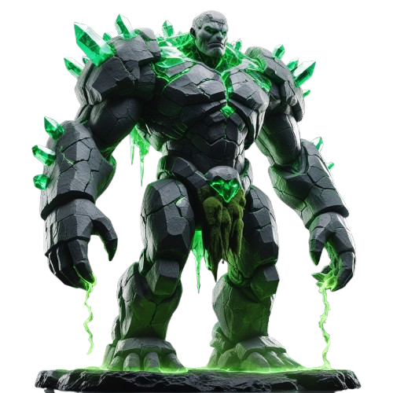

☠️ КАМЕННЫЙ ГОЛЕМ
HP 13 200 / 17 500

📋 Каменный Голем — что собрано
Фон
— алтарь со светящимся зелёным кристаллом-монолитом
Кристалл пульсирует
— фон
brightness
0.95→1.12 за 3.6с
Босс по центру
, высота 62%, перекрывает нижнюю треть кристалла — выглядит как страж алтаря
Дыхание в резонанс
— boss-breathe и bg-pulse оба 3.6s, синхронные → ощущение что они «связаны»
Ярко-зелёное свечение
—
drop-shadow #22ff66
пульсирует синхронно (глаза + кристаллы на спине)
Густая чёрная тень
— blur 7px радиальный градиент, голем «прилип» к полу, не висит
Маска ног
— нижние 20% растворяются в туман
16 зелёных частиц
— споры/энергия плывут вверх